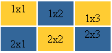

Учебник по Html для чайников. Таблицы.Ступенька 23-ая.В предыдущих главах мы научились создавать таблицы на конкретном примере, а в этой главе я хотела разом вывалить все оставшиеся возможности и атрибуты на ваши головы, но потом решила, что раз уж я пишу подробный учебник, то надо быть стойкой до конца:). Вернемся к нашему примеру, и поговорим о вертикальном выравнивании содержимого таблицы, т.е. о том, как можно сделать так, чтобы содержимое ячейки не только располагалось ровно посередине ее (как по умолчанию), а еще вверху или внизу. Вертикальное выравнивание задается следующим атрибутом - valign="middle" (top, bottom) - содержимое конкретной ячейки будет находится в середине ячейки (наверху или внизу):  Вот вам и наглядный пример, как это выглядит. А теперь разберемся, как это пишется:
Я прописала valign не для всех ячеек, только для тех, где я захотела чтобы текст располагался сверху или снизу, чтобы зря не тратить время и усилия. Существование атрибута valign значительно облегчает нашу с вами жизнь, страшно даже подумать, как пришлось бы мучиться, если бы его не было:).
А теперь, когда мы знаем, что align, задает горизонтальное выравнивание содержимого ячейки, а valign – вертикальное, перейдем к следующей ступеньке, чтобы узнать о других атрибутах, облегчающих нашу трудную жизнь.
<<< Ступенька 22-ая: Назад | Далее: Ступенька 24-ая >>>
|
|||||||||